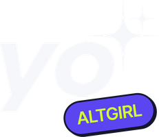

Ambassadors · v1Welcome in.
Let’s figure out your city.
Altgirl is one chat for life in a new city. You tell her what you need, she gets it done: a padel court at 7, a ride there, dinner after. Less apps, more life. This page is your first two weeks with us.

We’re not giving you a job. We’re asking a question.
We’re building this. Help us find out what your city actually needs. The first release goes live on November 24 in Da Nang, with Paris, Belgrade and Cyprus next. You and your people are our first testers and co-creators.
Try Altgirl for real things in your city, every week.
Join the weekly call, see what ships and what’s next.
What breaks, what’s missing, what your city needs.
Money: straight up, from day one
There’s no money in it yet. We’re just entering the market ourselves, and we don’t have earning mechanics that pay from day one. When the referral program goes live and payouts start, you’ll be first in line.
- Now. Your city gets into the product before others, your ideas ship with your name on them, and you’re on the team from day one.
- Later. Referral payouts for people who came through your code and actually use Altgirl. Size and timing aren’t set yet; we’ll tell you as soon as they are.
- Big reach or research. If you bring serious distribution or want to work on the science, that’s a separate conversation.
You’re first in your city. You build its crew.
As a first-wave ambassador you bring in the next ambassadors for your crowd: your neighbourhood, community, campus or profession. When payouts go live, you earn on the people you bring and on the people your ambassadors bring. That’s why this is the best spot to be in right now.
First people in a city. Bring in your crew, hold your city.
Ambassadors you bring in, one niche each.
Come in with your code or your crew’s.
Your first two weeks
- Day 1A 15-minute intro
Voice or call with Marina: what we’re building, what we ask, what we promise. Together we name your crowd in one word.
- Day 1Get in
Your access to Altgirl, your personal code, and the ambassadors chat.
- Days 1–3Try it yourself
Get 3 real things done for this week through Altgirl. Note how long each would take you by hand. Post in the chat what worked and what didn’t.
- Days 2–4Your city checklist
Rides, food, groceries and the one local pain everybody complains about. This is what your people will see in Altgirl.
- Days 3–7Ask your people
Send friends the link with your code. Each answers one question: what do you need for life in this city?
- Week 1First weekly call
What’s happening in your city and what you need from us.
- Weeks 2–4Yours in a release, your crew in the chat
Your case becomes a scenario and ships with your city and your name. Bring 2–3 people for your crew.
Your biggest input right now
A short doc with your 10–20 main cases: what you’d want Altgirl to do for you and your people in your city, right from the chat. Please share it within your first two weeks.
Find a game at your level, reserve a court, get a fourth player, a ride there and back, a reminder before the game, a weather check, a visa run when your stay runs out.
Your code
Each of you gets a personal code. It’s your invite link and your promo code in one. Through it we see who came through you and what they actually got done with Altgirl. We count real outcomes, not sign-ups, and that’s how your contribution is measured.
Before you post anything
Read “Language & positioning” in the folder first: it’s how we talk about Altgirl. Post in your own words. Send anyone to the site and to X, it’s more than welcome.
Please don’t promise
- Money, percentages or payout dates.
- Paying in the chat or the card: not live for users yet.
- A launch in a specific city by a specific date.
- Partners or services we haven’t announced.
Questions you’ll get
What do I get for this?
Your city in the product before others, your ideas in releases with your name on them, and a place on the team from day one. Payouts come with the referral program.
When does it work in my city?
Da Nang is first. Your city comes when we have the scenarios for it, and that’s exactly what you help us build.
I know a developer.
Great. That’s the next level: they build the agent for your community, on the scenarios your people asked for. Tell Marina and she’ll set up a call.
Can I post about Altgirl?
Yes, in your own words. Just don’t promise what isn’t there yet.
Reply in the ambassadors chat with your name, your city and one thing you’d want Altgirl to do for you this week.